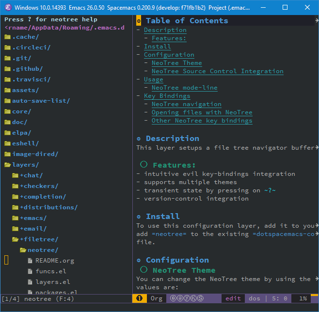

Neotree layer
Table of ContentsClose

1. Description
This layer setups a file tree navigator buffer using Neotree (replacing the Treemacs layer).
1.1. Features:
- intuitive evil key bindings integration
- supports multiple themes
- transient state by pressing on
? - version-control integration
2. Install
To use this configuration layer, add it to your ~/.spacemacs. You will need to
add neotree to the existing dotspacemacs-configuration-layers list in this
file.
3. Configuration
3.1. NeoTree Theme
You can change the NeoTree theme by using the setting neo-theme. Possible
values are:
| Setting | Description |
|---|---|
classic |
Use an icon to display items - only suitable for gui mode. |
ascii |
The simplest style, it will use x, - to display fold status. |
arrow |
Use unicode arrows to display fold status. |
icons |
Use all-the-icons packages and fonts |
nerd |
Use the NERDTree indentation mode and arrows. |
The default is classic.
Use nerd if you want it to look most like NERDTree in VIM. For example:
(setq neo-theme 'nerd)
3.2. NeoTree Source Control Integration
If you would like NeoTree to show source control information, you can use the
setting neo-vc-integration. It is a list containing the possible values:
| Setting | Description |
|---|---|
face |
Show information by changing the color of the file/directory name. |
char |
Show information with a character to the left of the file/directory name. |
The default is nil (do not show source control information), which is recommended.
For example,
(setq neo-vc-integration '(face))
Note: At this time, it is not recommended to set this to anything other
than nil. Otherwise, it will become very slow with larger source trees.
See https://github.com/jaypei/emacs-neotree/issues/126 for more information.
4. Usage
This layer provides a quick and simple way to navigate in an unknown project file tree with NeoTree.
To toggle the NeoTree buffer, press SPC f t or SPC p t (the latter opens
NeoTree with the root set to the projectile project root).
To select the NeoTree window, press SPC 0. The NeoTree window always has the
number 0 so it does not shift the current number of the other windows.
VCS integration is supported, the file color will change depending on its
current state. With default spacemacs-dark theme:
- green: new file
- purple: modified file
4.1. NeoTree mode-line
The mode-line has the following format [x/y] d (D:a, F:b) where:
xis the index of the current selected file or directoryythe total number of items (file and directory) in the current directorydthe name of the current directoryathe number of directories in the current directorybthe number of files in the current directory
5. Key bindings
5.2. Opening files with NeoTree
By default a file is opened in the last active window. It is possible to choose
window number where to open a file by using a numeric argument, for instance
2 l or 2 RET will open the current file in window 2. It is also possible to
open the file in a split window with | and -:
| Key binding | Description |
|---|---|
l or RET |
open file in last active window |
# l or # RET |
open file in window number # |
¦ |
open file in an vertically split window |
- |
open file in an horizontally split window |
5.3. Other NeoTree key bindings
| Key binding | Description |
|---|---|
TAB |
toggle stretching of the buffer |
c |
create a node |
C |
copy a node |
d |
delete a node |
gr |
refresh |
s |
toggle showing of hidden files |
q or fd |
hide NeoTree buffer |
r |
rename a node |
? |
show help |